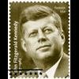

<html lang="en">
 <head>
<!-- Favicon -->
<link rel="shortcut icon" href="../../favicon.ico">
  <meta charset="utf-8"/>
  <title>
   American Pravda: The JFK Assassination, Part I - What Happened?
  </title>
  <meta content="Post on /v/Conspiracy from 2018-06-22 by Warnos44." name="description"/>
  <meta content="American Pravda: The JFK Assassination, Part I - What Happened?" property="og:title"/>
  <meta content="Post on /v/Conspiracy from 2018-06-22 by Warnos44." property="og:description"/>
  <link href="../../static/css/page.css" rel="stylesheet"/>
  <meta content="https://voat.conspiracy.hackliberty.org/thumbnails/b1/f3/b1f3a612-5920-4a4f-a85f-054823b0d804.jpg" property="og:image"/>
  <meta content="https://voat.conspiracy.hackliberty.org/v/conspiracy/2603768.html" property="og:url"/>
  <meta content="width=device-width, initial-scale=1" name="viewport"/>
  <link href="https://voat.conspiracy.hackliberty.org/v/conspiracy/2603768.html" rel="canonical"/>
  <meta content="article" property="og:type"/>
  <meta content="Voat /v/Conspiracy Archive" property="og:site_name"/>
  <meta content="en_US" property="og:locale"/>
  <meta content="summary_large_image" name="twitter:card"/>
  <meta content="American Pravda: The JFK Assassination, Part I - What Happened?" name="twitter:title"/>
  <meta content="Post on /v/Conspiracy from 2018-06-22 by Warnos44." name="twitter:description"/>
  <meta content="https://voat.conspiracy.hackliberty.org/thumbnails/b1/f3/b1f3a612-5920-4a4f-a85f-054823b0d804.jpg" name="twitter:image"/>
 </head>
</html>
<body class="dark">
 <div id="container">
  <!-- array (
  'submissionid' => 2603768,
  'creationDate' => '2018-06-22 23:52:04',
  'domain' => 'unz.com',
  'formattedContent' => NULL,
  'isAdult' => 0,
  'isAnonymized' => 0,
  'subverse' => 'Conspiracy',
  'thumbnail' => 'b1f3a612-5920-4a4f-a85f-054823b0d804.jpg',
  'title' => 'American Pravda: The JFK Assassination, Part I - What Happened?',
  'url' => 'http://www.unz.com/runz/american-pravda-the-jfk-assassination-part-i-what-happened/',
  'userName' => 'Warnos44',
  'archivedLink' => NULL,
  'archivedDomain' => NULL,
  'isDeleted' => 0,
) -->
  <div style="text-align:center; font-size:24px; font-weight:bold;">
   <a href="../../index.html" style="text-decoration: none; color: inherit;">
    Voat /v/Conspiracy Archive
   </a>
  </div>
  <div class="content" role="main">
   <div class="sitetable linklisting" id="siteTable">
    <div class="submission id-2603768 link type-text" id="submission-2603768">
     <a name="submissionTop">
     </a>
     <p class="parent">
     </p>
     <a class="thumbnail may-blank" href="http://www.unz.com/runz/american-pravda-the-jfk-assassination-part-i-what-happened/" target="_self">
      
     </a>
     <div class="entry unvoted">
      <p class="title">
       <a class="title may-blank" href="http://www.unz.com/runz/american-pravda-the-jfk-assassination-part-i-what-happened/" tabindex="1" target="_self" title="American Pravda: The JFK Assassination, Part I - What Happened?">
        American Pravda: The JFK Assassination, Part I - What Happened?
       </a>
       <span class="domain">
        (
        <a href="https://archive.searchvoat.co/search.php?d=unz.com">
         unz.com
        </a>
        )
       </span>
      </p>
      <p class="tagline">
       submitted
       <time datetime="2018-06-22T23:52:04+00:00" title="06/22/2018 11:52:04 PM">
        2018-06-22T23:52
       </time>
       by
       <span class="userattrs">
        <a class="author may-blank" href="https://archive.searchvoat.co/search.php?u=Warnos44">
         Warnos44
        </a>
       </span>
      </p>
      <ul class="flat-list buttons">
       <li class="first">
        <a class="comments may-blank" href="https://archive.searchvoat.co/v/Conspiracy/2603768" rel="nofollow">
         1 comment
        </a>
       </li>
      </ul>
     </div>
     <div class="child">
     </div>
     <div class="clearleft">
     </div>
    </div>
    <div class="clearleft">
    </div>
   </div>
   <div class="horizontal-line">
   </div>
   <div class="commentarea">
    <div class="sitetable nestedlisting" id="siteTable">
     <div class="child id-13103830 comment even" style="">
      <div class="entry unvoted">
       <div class="noncollapsed" id="13103830" style=";">
        <p class="tagline">
         <a class="author may-blank" href="https://archive.searchvoat.co/search.php?u=TheGreatAustralian">
          TheGreatAustralian
         </a>
         <span class="userattrs">
         </span>
         <time datetime="2018-06-23T02:35:58+00:00" title="6/23/2018 2:35:58 AM">
          2018-06-23T02:35
         </time>
        </p>
        <div class="usertext-body may-blank-within" id="commentContent-13103830">
         <div class="md">
          <p>
           <p>
            This is what happened ..
           </p>
           <blockquote>
            <p>
             Millions in news broadcasting, at the CIA, the FBI, the Secret Service and in the US Attorney General's Office, will be required to defend capital charges either as primary conspirators or for perpetuating the cover up.**
            </p>
           </blockquote>
           <p>
            <a href="http://i.imgs.fyi/img/6jg.jpg">
             The Kennedys moments before the shots were fired.
            </a>
           </p>
           <blockquote>
            <p>
             <a href="http://i.imgs.fyi/img/6jh.jpg">
              Jim Braden
             </a>
             fired the first shot from the roof of the Dal Tex Building across Houston Street from the Texas School Book Depository, he was taken in by a Deputy Sheriff before being released.
            </p>
            <p>
             <a href="http://i.imgs.fyi/img/6ji.jpg">
              Lee Harvey Oswald
             </a>
             was blamed for killing the President, and Dallas Police Officer
             <a href="http://interested-party.blogspot.com.au/2015/10/cops-lives-suck-jd-tippit-murdered-by.html">
              JD Tippit
             </a>
             a couple miles away around forty minutes later, despite photos show him at the doorway of the TSBD, when the shots were fired in the first instance and when The Three Tramps were marched by hours later.
            </p>
            <p>
             <a href="http://i.imgs.fyi/img/6jk.png">
              William F Buckley
             </a>
             was "Umbrella Man" who signaled the shooters on the Grassy Knoll all systems were go, his accomplice was Corsican adventurer Lucien Sarti.
            </p>
            <p>
             After the assassination Buckley and his CIA classmate E Howard Hunt went to Mexico, and are thought to have engineered the 1968
             <a href="http://www.todayifoundout.com/index.php/2014/09/tlatelolco-massacre-1968/">
              Tlatelolco Massacre
             </a>
             which had a death toll of several thousand.
            </p>
            <p>
             <a href="http://i.imgs.fyi/img/6jl.jpg">
              The Moorman Photograph
             </a>
             has snipers nests on the Grassy Knoll with muzzle flashes behind the picket fence left screen, E Howard Hunt is firing,
             <a href="https://s27.postimg.org/w0dtd8xwz/MLKs_Dallas.jpg">
              Martin Luther &amp; Coretta King
             </a>
             are standing to his right, Afro Secret Serviceman Abraham Bolden is behind and to Coretta’s left.
            </p>
           </blockquote>
           <p>
            <strong>
             The “
             <a href="http://i.imgs.fyi/img/6jn.jpg">
              Badgeman
             </a>
             ” enhancement has Dallas Cop Joe Smith firing from behind the rotunda wall, with Gordon H Arnold, deaf mute Ed Hoffman &amp; Wife and Andy Warhol.
            </strong>
           </p>
           <blockquote>
            <p>
             As the limousine emerged from behind the freeway sign, the driver
             <a href="http://i.imgs.fyi/img/6jp.jpg">
              William Greer
             </a>
             turned and looked over his right shoulder, he turned back and while holding the steering wheel with his left hand retrieved something from under the dash with his right hand.
            </p>
            <p>
             Transferring the object to his left hand and turning back around to look at the President, he brought his left hand around his body and
             <a href="http://i.imgs.fyi/img/6jq.gif">
              aimed and fired
             </a>
             at John Kennedy’s head!
            </p>
            <p>
             <a href="http://i.imgs.fyi/img/4kk.jpg">
              The Three Tramps
             </a>
             were E Howard Hunt of Watergate fame, Charles Harrelson father of television actor Woody Harrelson, and Charles Frederick Rogers wanted in Houston Tx. for killing and dismembering both his parents in 1965.
            </p>
            <p>
             <a href="http://i.imgs.fyi/img/jev.jpg">
              Ted Gunderson
             </a>
             was FBI Bureau Chief in Dallas when President Kennedy was killed, after the shooting he was filmed in possession of one of two rifles on the sixth floor of the TSBD, he was in Memphis when Martin Luther King was shot..
            </p>
            <p>
             And in Los Angeles when Senator Robert Kennedy was slain, he was part of the Franklin Case cover up that goes back thirty years, whereas
             <a href="https://www.youtube.com/results?search_query=rusty+nelson+hunter+thompson">
              Rusty Nelson
             </a>
             testified Hunter S Thompson paid him $100,000 a time to film snuff killings to the tune of around fifty dead!
            </p>
            <p>
             <a href="http://i.imgs.fyi/img/6jt.png">
              Jim Lehrer
             </a>
             formerly of PBS News was in Dallas that day with former PBS co host Robert MacNeil both part of the White House Press Corps, MacNeil's testimony has supported the official story ever since .. he says he heard a single shot then two more in quick succession.
            </p>
            <p>
             He went into the portal of the TSBD where he encountered a young man he subsequently identified as Lee Harvey Oswald who he says directed him to the nearest telephone, Lehrer says he stayed at Dallas Love Field with Air Force One.
            </p>
            <p>
             As well as identifying the shooters on the GK, the Moorman shot reveals about
             <a href="http://i.imgs.fyi/img/6ju.jpg">
              twenty muzzle flashes
             </a>
             including Smith's shot from the corner of the Rotunda Wall, and the "Oliver Stone" flash from further along the fence line.
            </p>
            <p>
             <a href="https://www.youtube.com/watch?v=Azp7s4mEdGc">
              Alex Jones Admits CIA Ties
             </a>
             .. we know CIA brethren E Howard Hunt, William F Buckley, WR "Tosh" Plumlee and
             <a href="http://i.imgs.fyi/img/6jw.jpg">
              George HW &amp; George W Bush
             </a>
             were there, another could have been David R Jones Alex Jones' Dallas resident sire, maybe former US Marine marksman Jim Lehrer fired as well.
            </p>
           </blockquote>
           <p>
            <strong>
             At plus eighteen hrs around 9:30 pm on the evening of November 23, 1963, Australian radio played a tape recording of the assassination, wherein Mrs Kennedy's voice was clearly heard calling "hello Coretta" followed by a volley of gunfire.
            </strong>
           </p>
           <blockquote>
            <p>
             The presenter explained Coretta was the wife of one Reverend Martin Luther King, he played a slowed down version of the tape and asked listeners how many shots they could hear, he said he counted about nineteen his studio guest said she counted twenty two.
            </p>
            <p>
             That was the only time the Luther Kings were associated with the crime, until whispers were heard at the time of the 1968 Democratic National Convention in Chicago, where after some short time later Luther King was shot dead by sniper fire, while standing talking on the telephone on a hotel balcony in Memphis.
            </p>
            <p>
             Although he was feted by the same ppl that propounded the LHO lone assassin scenario, there was no money the black ---- was broke, he went to the source had roped him into the conspiracy in the first place read George HW Bush, and asked for dough to be told there was none.
            </p>
            <p>
             So he chanced his arm at blackmail presumably assuring GHWB if he was not paid everyone would learn the truth about Dallas, he laughed him off, so LK took time at the 1968 DNC to drop the bombshell of his own involvement and was shot down for it!
             <a href="http://dockersunion.net/vb/forum/the-kennedy-assassinations/67-the-assassination-of-john-f-kennedy">
              The Assassination of John F Kennedy.
             </a>
            </p>
           </blockquote>
           <p>
            <strong>
             More here ..
            </strong>
           </p>
           <blockquote>
            <p>
             <a href="https://www.youtube.com/results?search_query=Evidence+of+Revision+Part+4">
              Evidence of Revision Part 4
             </a>
             , compiled from thousands of television news tapes detailing neglected or ignored evidence re the death of United States Senator Robert Kennedy, including evidence from the Los Angeles Coroner that the shots that killed Robert Kennedy..
            </p>
            <p>
             Were fired into his head from a distance of between one and three inches from behind and below his right ear, Sirhan Sirhan who was convicted for the killing was several feet to his front, the film has footage of the LA DA simply brushing that aside .. Security Guard
             <a href="http://i.imgs.fyi/img/6jz.png">
              Thane Eugene Cesar
             </a>
             is thought to have fired the fatal shots.
            </p>
            <p>
             Video:
             <a href="https://www.youtube.com/watch?v=UR_QZ694R18&amp;t=260s">
              Murder on the Tracks
             </a>
             - Former pro wrestler Billy Jack Haynes admits trafficking cocaine he got from murdered CIA drugs pilot Barry Seal, he says Seal introduced him to a politician drug dealer from Arkansas [Bill Clinton] who in 1984 asked him to kill
             <a href="https://en.wikipedia.org/wiki/David_A._Kennedy#Death">
              David Kennedy
             </a>
             son and nephew of Senator Robert and President John Kennedy.
            </p>
            <p>
             Allegations surfaced linking the Clintons and the CIA to the plane crash that took the lives of of John Kennedy Jr, his wife and her sister,  and how his death cleared the path for Hillary Clinton to start her political career, by running unopposed by any major Democratic rival for the newly available US Senate seat for New York.
             <a href="https://www.exopolitics.org/bombshell-qanon-posts-link-clintons-cia-to-jfk-jr-plane-crash/">
              Link
             </a>
             .
            </p>
           </blockquote>
          </p>
         </div>
        </div>
        <ul class="flat-list buttons">
         <li class="first">
          <a class="bylink" href="https://archive.searchvoat.co/v/Conspiracy/2603768/13103830" rel="nofollow">
           link
          </a>
         </li>
        </ul>
       </div>
      </div>
     </div>
    </div>
   </div>
  </div>
 </div>
<!-- Footer Section -->
<footer class="container-fluid mt-3">
  <p class="small mb-0">
    /v/conspiracy archive has 42504 posts and 159856 total comments.
    <a href="https://git.hackliberty.org/c0mmando/voat-conspiracy-archive/">source code</a>.
  </p>
</footer>

<script src="../../static/js/jquery-3.7.1.slim.min.js"></script>
<script src="../../static/js/comments-toggle.js"></script>

</body>
